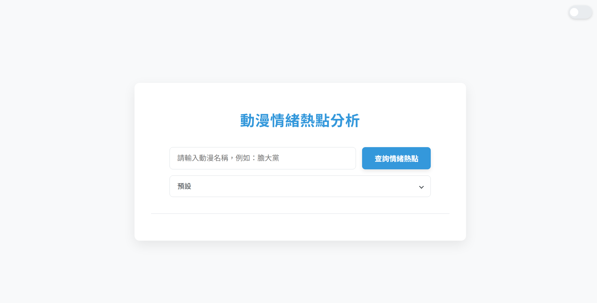
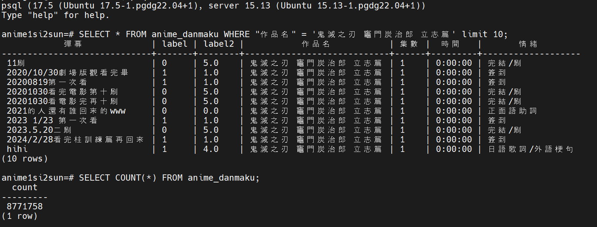
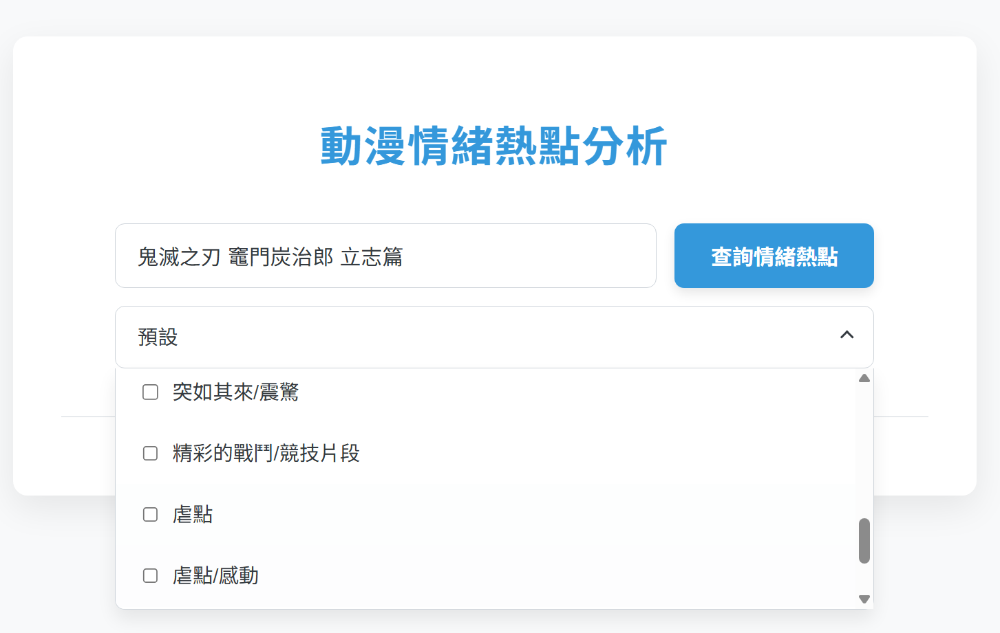
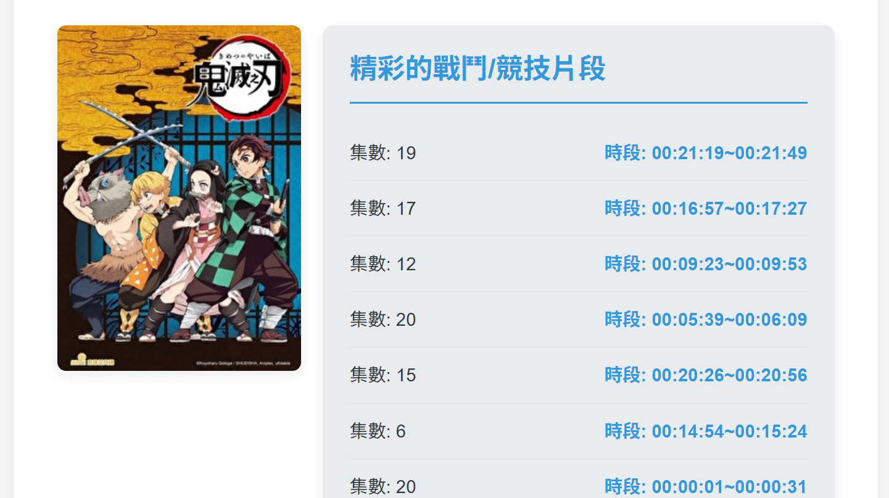
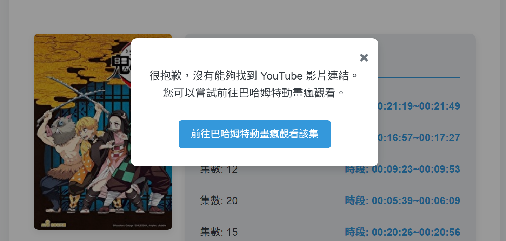

專案名稱：動漫情緒熱點分析
專案簡介
這是一個從資料搜集、模型訓練到雲端部署的完整全端專案。使用者可輸入動漫名稱，系統會分析該動漫在影片彈幕中的情緒分佈，並以熱點圖的方式呈現每一集的高潮迭起之處。使用者點擊熱點即可直接跳轉至影片的對應時間點，快速重溫精彩片段。
功能特色
- 爬蟲自動化：使用 Selenium 自動從動畫瘋網站爬取特定動漫的彈幕資料。
- 情緒分析：利用 BERT 預訓練模型，對中文彈幕進行情緒分類。
- 數據視覺化：將分析結果以互動式圖表呈現，點擊可觸發事件。
- 雲端部署：將 FastAPI 後端服務打包成 Docker 容器，並部署在 Google Cloud Platform (GCP) 上，實現高效能的服務。
詳細說明
-
資料準備
1. 使用 Selenium 自動從動畫瘋網站爬取動漫的作品名、集數、彈幕、時間軸、影片URL，分為彈幕與URL兩個資料
2. 利用個人半監督訓練過的BERT類模型，對彈幕資料進行兩次情緒分類的標籤
(第一層分五個分類，第二層利用3個模型分27類)3. 將標記後的彈幕與URL資料，上傳於GCP的VM所架設的Postgresql
 -
前後端執行
4. 使用者輸入動漫的作品名(有做搜尋預測，方便搜尋)，並選擇想查詢情緒分類(預設、虐點、感動、爆笑、戰鬥等等)
5. 根據使用者輸入的作品名與情緒分類，調取VM的postgresql的彈幕資料
6. 根據彈幕與時間軸資料進行篩選與運算後，選出各情緒分類的TOP的片段，回傳片段資料與相對應的URL資料
(6.1). 同時間，將回傳的資料作為快取資料傳送到redis，讓下一輪使用者可更快速搜尋到資料
7. 回傳的資料，到前端會呈現作品名，集數與可選的時間片段，如有YT連結可進入該時段的影片，否則回到該集數的巴哈連結



-
雲端部署
將 FastAPI 後端服務打包成 Docker 容器，並部署在 Google Cloud Platform (GCP) 上，實現高效能的服務。
使用的技術
前端：HTML, CSS, JavaScript
後端：FastAPI, PyTorch
資料庫：PostgreSQL
模型：BERT (bert-base-chinese)
部署：Docker, GCP (Virtual Machine, Cloud Run)